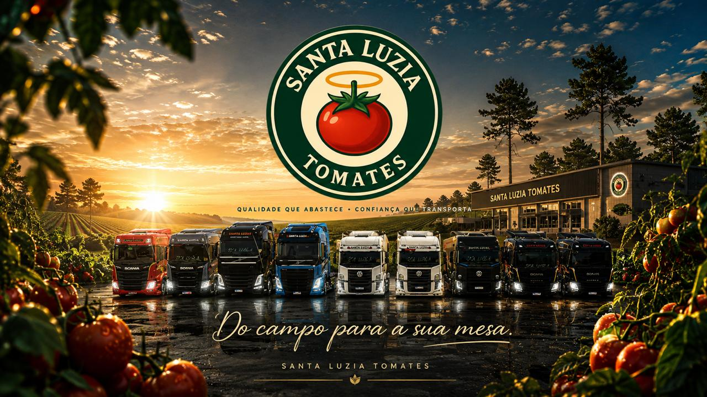

🏢 SOBRE NÓS
Conheça a Santa Luzia
Conheça a Santa Luzia

A Santa Luzia nasceu da paixão pelas estradas, pelos caminhões e principalmente pela nossa comunidade. Com o passar do tempo, fomos crescendo, reunindo novos membros e construindo uma história baseada em amizade, respeito e diversão.
Nosso objetivo é criar uma comunidade organizada, divertida e acolhedora para quem gosta do mundo dos caminhões. Buscamos sempre trazer novidades, eventos, skins, recrutamentos e experiências especiais para nossos membros.
Nossa história e nossa frota também fazem parte das estradas do Global Truck Online.
Também estamos presentes no Truckers Brasil Online, reunindo novos membros e fortalecendo nossa comunidade.
Por trás da Santa Luzia existem membros, ADMs e pessoas que ajudam diariamente a fazer tudo acontecer. São eles que tornam cada evento, votação, recrutamento e momento nas estradas ainda mais especial.
Desde o início, a Santa Luzia vem conquistando seu espaço, crescendo junto com sua comunidade e criando novos projetos. Hoje, contamos com nossa própria Central, reunindo em um só lugar skins, jogos, notícias, eventos, recrutamento e muito mais.
“Mais do que uma empresa, uma comunidade feita por quem ama as estradas.”
SANTA LUZIA — sabor que vem da terra 🍅